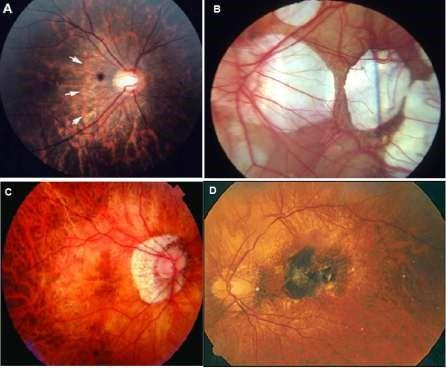

Refraction · Myopia
Myopia: signs — only with high myopia

Signs: Only with high myopia
- The globe is large with large cornea, deep anterior chamber & large pupil.
- Pseudo-proptosis.
- Vitreous liquefaction (floaters).
- Tessellated (tigeroid) fundus.
- Chorio-retinal degenerations.
- Posterior staphyloma.
- Myopic crescent: Temporal to or around the optic disc, caused by:
- Atrophy of the outer retina and the choroid.
- Exposure of sclera as a result of enlargement of the posterior segment of the eye.
- Fuchs' spot: Black area at the macula with loss of central vision.
- It's caused by recurrent hemorrhages from subretinal choroidal neovascular membrane (CNV) with secondary degeneration of RPE.